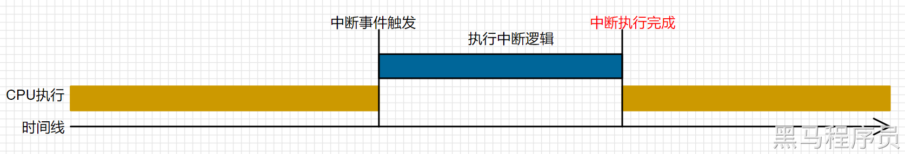
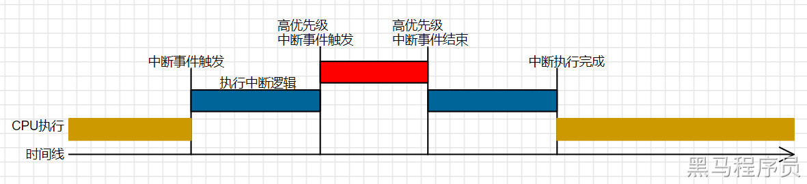
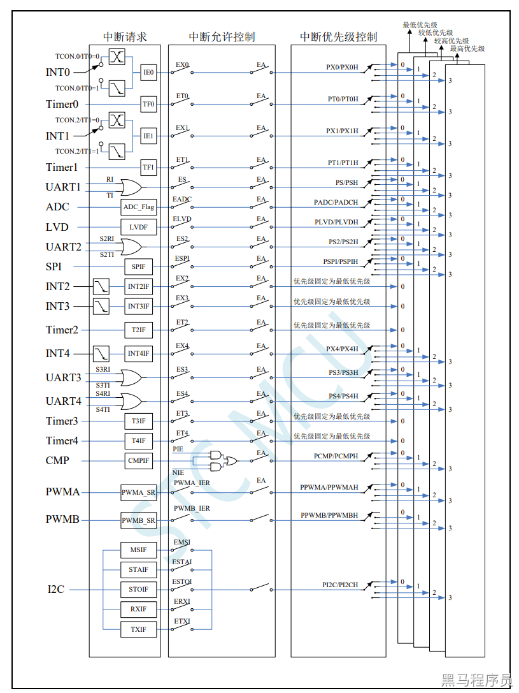

<!DOCTYPE lake>
<h2 data-lake-id="b4Ahq" id="b4Ahq"><span data-lake-id="u029232d5" id="u029232d5">学习目标</span></h2><ol list="ua6f1689c"><li data-lake-id="u0d678fdf" fid="u90de96ee" id="u0d678fdf"><span data-lake-id="ue3038981" id="ue3038981">理解中断的概念，掌握中断的分类和优先级</span></li><li data-lake-id="u877c09aa" fid="u90de96ee" id="u877c09aa"><span data-lake-id="u7c1a85b9" id="u7c1a85b9">理解中断的响应机制和处理方法</span></li></ol><h2 data-lake-id="cZY2j" id="cZY2j"><span data-lake-id="u28b9e08b" id="u28b9e08b">学习内容</span></h2><h3 data-lake-id="tu961" id="tu961"><span data-lake-id="uefb1bf36" id="uefb1bf36">中断的概念</span></h3><p data-lake-id="u4e044a02" id="u4e044a02"><span data-lake-id="ude6df03b" id="ude6df03b">中断系统是为使 CPU 具有对外界紧急事件的实时处理能力而设置的。</span></p><p data-lake-id="udb424055" id="udb424055"><span data-lake-id="ued5338db" id="ued5338db">当中央处理机 CPU 正在处理某件事的时候外界发生了紧急事件请求，要求 CPU 暂停当前的工作,转而去处理这个紧急事件，处理完以后，再回到原来被中断的地方，继续原来的工作，这样的过程称为中断。实现这种功能的部件称为中断系统，请示 CPU 中断的请求源称为中断源。微型机的中断系统一般允许多个中断源，当几个中新源同时向 CPU 请求中断，要求为它服务的时候，这就存在 CPU 优先响应哪一个中断源请求的问题。通常根据中断源的轻重缓急排队，优先处理最紧急事件的中断请求源，即规定每一个中断源有一个优先级别。CPU 总是先响应优先级别最高的中断请求。</span></p><p data-lake-id="u9c14752c" id="u9c14752c"></p><p data-lake-id="ua895d238" id="ua895d238"><span data-lake-id="uc52b9a2d" id="uc52b9a2d">当 CPU 正在处理一个中断源请求的时候(执行相应的中断服务程序)，发生了另外一个优先级比它还高的中断源请求。如果 CPU 能够暂停对原来中断源的服务程序,转而去处理优先级更高的中断请求源处理完以后，再回到原低级中断服务程序，这样的过程称为中断嵌套。这样的中断系统称为</span><strong><span data-lake-id="u63d1e49d" id="u63d1e49d">多级中断系统</span></strong><span data-lake-id="u05fe1826" id="u05fe1826">，没有中断嵌套功能的中断系统称为单级中断系统。NVIC 的全称是 Nested Vectored Interrupt Controller，中文译为</span><strong><span data-lake-id="u09a170ee" id="u09a170ee">嵌套向量中断控制器</span></strong></p><p data-lake-id="uba776075" id="uba776075"></p><p data-lake-id="u7db6ad07" id="u7db6ad07"><span data-lake-id="u79fb2d33" id="u79fb2d33">用户可以用关</span><strong><span data-lake-id="u4645ea65" id="u4645ea65">总中断允许位(</span></strong><span data-lake-id="ud6959a60" id="ud6959a60">EA/IE.7)或相应</span><strong><span data-lake-id="ubbbb32a2" id="ubbbb32a2">中断的允许位</span></strong><span data-lake-id="u12a48a13" id="u12a48a13">屏蔽相应的中断请求，也可以用打开相应的中断允许位来使 CPU 响应相应的中断申请,每一个中断源可以用软件独立地控制为开中断或关中断状态，部分中断的优先级别均可用软件设置。高优先级的中断请求可以打断低优先级的中断，反之，低优先级的中断请求不可以打断高优先级的中断。当两个相同优先级的中断同时产生时，将由查询次序来决定系统先响应哪个中断。</span></p><h3 data-lake-id="Fbz0X" id="Fbz0X"><span data-lake-id="u8368fcc0" id="u8368fcc0">中断源</span></h3><p data-lake-id="u1b1035b0" id="u1b1035b0"><span data-lake-id="u3514ecec" id="u3514ecec">能请示CPU中断的请求源为中断源。STC8H中的中断源如下图</span></p><p data-lake-id="u23e19287" id="u23e19287"></p><h3 data-lake-id="LqgFf" id="LqgFf"><span data-lake-id="u2d8d20cc" id="u2d8d20cc">中断寄存器</span></h3><p data-lake-id="u9a14701c" id="u9a14701c"><span data-lake-id="u707167f1" id="u707167f1">通过STC8H的用户手册可以查询到所有的中断寄存器，以及中断请求位信息。</span></p><p data-lake-id="u86d0f62f" id="u86d0f62f"><a data-lake-id="u77fe79a2" href="http://www.stcmcudata.com/STC8F-DATASHEET/STC8H.pdf" id="u77fe79a2" rel="noopener noreferrer" target="_blank"><span data-lake-id="u9582c987" id="u9582c987">http://www.stcmcudata.com/STC8F-DATASHEET/STC8H.pdf</span></a></p><h3 data-lake-id="EJMtS" id="EJMtS"><span data-lake-id="u21d559a4" id="u21d559a4">中断函数</span></h3><p data-lake-id="u16d5a80a" id="u16d5a80a"><span data-lake-id="ud0e3c4f4" id="ud0e3c4f4">通过 </span><code data-lake-id="ubdce627b" id="ubdce627b"><span data-lake-id="ucd8b8985" id="ucd8b8985">interrupt</span></code><span data-lake-id="u42a41ea7" id="u42a41ea7">关键字定义中断函数。示例如下:</span></p><span class="yuque-card-unsupported">[codeblock]</span><ul list="u9e7e1431"><li data-lake-id="uba9f6bdd" fid="u2803713c" id="uba9f6bdd"><code data-lake-id="u644cc27e" id="u644cc27e"><span data-lake-id="u46c509f5" id="u46c509f5">UART1_int</span></code><span data-lake-id="u195a67de" id="u195a67de">是中断函数的名称，可以随意取，按照自己的需求定</span></li><li data-lake-id="uecdfc60d" fid="u2803713c" id="uecdfc60d"><code data-lake-id="u2871382a" id="u2871382a"><span data-lake-id="u606bf6db" id="u606bf6db">interrupt</span></code><span data-lake-id="uaa35bca7" id="uaa35bca7">是中断函数的标记，说明当前函数是中断函数</span></li><li data-lake-id="ud3c229c3" fid="u2803713c" id="ud3c229c3"><code data-lake-id="u5bfea6c6" id="u5bfea6c6"><span data-lake-id="udb39f11e" id="udb39f11e">0</span></code><span data-lake-id="ub8160523" id="ub8160523">是中断次序，这个就需要根据自己业务，查询用户手册来定。</span></li></ul><p data-lake-id="u00ad6753" id="u00ad6753"><span data-lake-id="uecdd31e9" id="uecdd31e9">中断函数，可以理解为回调函数，就是这个函数定义出来了，在什么时机调用，不是我们做的，是系统自己调用的。而我们关心的是，某个事件触发了这个函数调用，我们可以在这个函数中写自己的逻辑。</span></p><p data-lake-id="uad360904" id="uad360904"><span data-lake-id="uea5fc731" id="uea5fc731">​</span><br/></p><h3 data-lake-id="w7E1J" id="w7E1J"><span data-lake-id="ubebd928c" id="ubebd928c">验证Uart的中断函数</span></h3><p data-lake-id="u4ee59e72" id="u4ee59e72"><span data-lake-id="ua8d109fc" id="ua8d109fc">接收时亮灯，发送时灭灯</span></p><span class="yuque-card-unsupported">[codeblock]</span><p data-lake-id="u7cf1bc91" id="u7cf1bc91"><span data-lake-id="u70003569" id="u70003569">完成的内容有：</span></p><ul list="ub10451ee"><li data-lake-id="ue6e147c2" fid="u4b18e5cd" id="ue6e147c2"><span data-lake-id="ub4a34694" id="ub4a34694">配置Uart初始化，包括定时发生器</span></li><li data-lake-id="u30b39623" fid="u4b18e5cd" id="u30b39623"><span data-lake-id="ufe5f00ba" id="ufe5f00ba">查询几个寄存器地址：SBUF，IE</span></li></ul><h2 data-lake-id="il0e8" id="il0e8"><span data-lake-id="uc1ad4263" id="uc1ad4263">练习题</span></h2><ol list="uc4bb78cb"><li data-lake-id="u1c2b34fc" fid="u5bae7fbb" id="u1c2b34fc"><span data-lake-id="uba42298f" id="uba42298f">阅读用户手册中断章节</span></li><li data-lake-id="u0ebc1fd3" fid="u5bae7fbb" id="u0ebc1fd3"><span data-lake-id="u0dea10b7" id="u0dea10b7">尝试验证UART1的中断函数</span></li></ol>